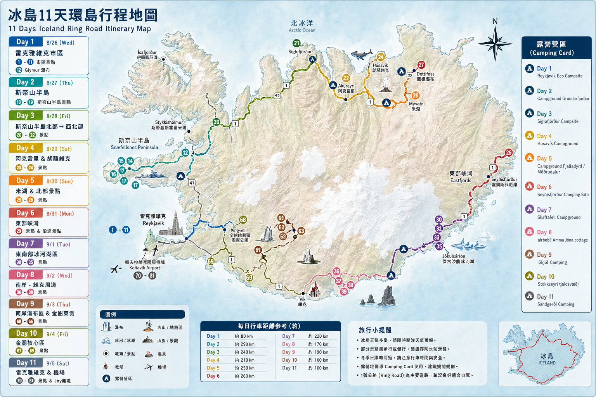

冰島少女之旅
環島 · 露營之旅 · 2026
冰島三人行
Iceland
Aug. 26 - Sep. 6

✕
順時針路線
雷克雅維克
斯奈山半島
北部小鎮
阿克雷里
米湖
東峽灣
冰河湖
冰川維克
南岸瀑布
金圈
雷克雅維克
每日行程
點擊任意一天查看詳細景點安排
全部
♨️ 溫泉
🛒 補給日
旅行備忘錄
📍
Filip's Iceland list
在 Google Maps 查看精選景點清單 ↗
📍
露營區
在 Google Maps 查看露營區 ↗
🗺️
冰島順時鐘環島景點表格
在 Google Sheets 開啟完整景點清單 ↗
補給規劃
1
雷克雅未克 Bónus（8/26 傍晚）
冰島最便宜超市 ｜ 採購 3-4 天份量，斯奈山半島物資少
2
Varmahlíð / Sauðárkrókur（8/29）
北部補給，前往阿庫雷里前
3
Egilsstaðir Bónus（9/1 晚）
東部最大城市 ｜ 採購 3-4 天，南下前最後大補給
4
維克小鎮（9/4）
小超市補充最後食物，隔日黃金圈補給點少
重要提醒
⛺
Camping Card 使用
標 ★ 的露營地可使用，有效期至 9/15，全程約 7-8 晚可省費用
💡
行前必備工具
📍 離線地圖：Google Maps 或 Maps.me 已下載
📅 預約確認：冰川健行、租車確認信件
📱 必要 APP：Vedur (天氣)、SafeTravel (路況)